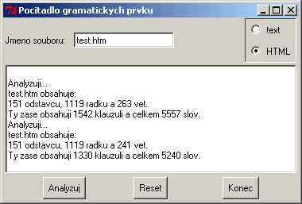

Níže uvedený text pochází z prvního vydání. Nad tímto textem se nachází aktuální stav po revizi směřující k druhému vydání.
V této případové studii rozšíříme funkčnost programu pro počítání slov,
který jsme vyvinuli již dříve. Vytvoříme program, který napodobí funkci
unixovského programu wc v tom smyslu, že bude vypisovat počet
řádků, slov a znaků v souboru. Ale půjdeme ještě dál a budeme vypisovat také
počet vět, klauzulí (viz
poznámka dále), slov, písmen a interpunkčních znamének v textovém
souboru. Vývoj programu budeme provádět po etapách. Postupně budeme zvyšovat
jeho schopnosti. Převedeme jej do podoby modulu, abychom zvýšili jeho
znovupoužitelnost. A upravíme jeho implementaci do objektově orientované
podoby, čím zvýšíme možnosti dalšího rozšiřování funkčnosti.
Implementovat jej budeme v jazyce Python, ale přinejmenším počáteční fáze mohou být napsány i v jazycích BASIC nebo Tcl. S tím, jak budeme řešit složitější části problému, budeme stále více používat zabudované datové struktury jazyka Python. Proto se bude obtížnost případného zápisu v jazyce BASIC zvyšovat, ačkoliv použití Tcl bude stále možné. Objektově orientované stránky konečného řešení budou vhodné pouze pro jazyk Python.
Jako cvičení pro čtenáře bude ponechána možnost implementace dalších rysů, jako jsou:
((průměrný počet slov na větu) + (procento
slov s více než 5 písmeny) * 0.4). Toto číslo vyjadřuje složitost
textu.Podívejme se znovu na dříve vytvořený program pro počítání slov (viz Práce se soubory — Počítání slov):
import string
def pocetSlov(s):
seznam = string.split(s)
# Poznámka překladatele: Od verze jazyka Python 2
# je pro standardní řetězec definována metoda split(), takže místo výše
# uvedeného zápisu můžeme psát s.split() a není nutné provádět import
# modulu string.
return len(seznam) # vrátíme počet prvků seznamu
vstup = open("menu.txt", "r")
celkem = 0 # vytvoříme proměnnou a nastavíme jí počáteční hodnotu nula
for radek in vstup.readlines():
celkem = celkem + pocetSlov(radek) # sečti počty za každý řádek
print "Soubor má %d slov." % celkem
vstup.close()
Potřebujeme přidat počítadla řádků a znaků. Počítání řádků je snadné, protože cyklus zpracovává vstup po řádcích. Jednoduše přidáme nějakou proměnnou a budeme ji zvyšovat při každé obrátce cyklu. Počítadlo znaků je pouze mírně složitější, protože můžeme procházet seznam slov a jejich délky přičítat do další proměnné.
Rádi bychom také zvýšili obecnost použití programu tím, že jméno
zkoumaného souboru zjistíme z parametru příkazového řádku nebo, pokud není
zadáno, vyžádáme si zadání jména dotazem na uživatele. (Alternativní řešení
by spočívalo ve čtení textu ze standardního vstupu, což právě dělá opravdový
program wc.)
Takže konečné řešení ve stylu wc vypadá takto (poznámka překladatele: abychom se vyhnuli komplikacím s
českými řetězci ve zdrojovém textu programu, zjednodušíme si řešení tím, že
použijeme cestinu bez hacku a carek):
import sys, string # Získáme jméno souboru buď z příkazového řádku # nebo si je vyžádáme od uživatele. if len(sys.argv) != 2: jmenoSouboru = raw_input("Zadejte jmeno souboru: ") else: jmenoSouboru = sys.argv[1] vstup = open(jmenoSouboru, "r") # Poznámka překladatele: Od verze Python 2 by se měla dávat # přednost zápisu vstup = file(jmenoSouboru, "r") # Počáteční hodnoty počítadel nastavíme na nuly. # Tím se také vytvoří příslušné proměnné. slov = 0 radku = 0 znaku = 0 for radek in vstup.readlines(): radku = radku + 1 # Řádek rozložíme na slova a spočítáme je. seznamSlov = string.split(radek) # Poznámka překladatele: U Python 2 lze psát # seznamSlov = radek.split() slov = slov + len(seznamSlov) # Počet znaků určíme z délky původního řádku, # čímž započítáme mezery atd. znaku = znaku + len(radek) print "%s ma %d radku, %d slov a %d znaku" % (jmenoSouboru, radku, slov, znaku) vstup.close()
Pokud znáte unixovský příkaz wc, pak víte, že mu můžete
jméno souboru zadat v podobě masky. Tím získáte hledané údaje pro všechny
soubory, které masce vyhovují, a získáte také celkový součet těchto údajů.
Výše uvedený program pracuje pouze s přímo zadanými jmény souborů. Pokud
chcete, aby zpracovával i soubory zadané maskou, podívejte se na modul
glob. Ten vám umožní vytvořit seznam jmen vyhovujících souborů,
který pak můžete zpracovat. Budete k tomu potřebovat dočasná počítadla pro
každý soubor a navíc kumulativní počítadla pro celkové součty (součty součtů
za jednotlivé soubory). Nebo místo toho můžete použít slovník…
Když jsem začal přemýšlet o tom, jak bychom mohli rozšířit funkčnost, abychom počítali věty a slova místo "skupin znaků" (což činíme ve výše uvedeném řešení), napadlo mě nejprve, že bychom měli ze souboru nejdříve v cyklu načíst jednotlivé řádky a pak bychom měli v cyklu zpracovat každý řádek a získat z něj slova do dalšího seznamu. Nakonec bychom měli zpracovat každé "slovo" za účelem odstranění nadbytečných znaků.
Když jsem o tom uvažoval o něco déle, začalo být zřejmé, že pokud bychom jednoduše shromažďovali slova a interpunkční znaménka, mohli bychom právě interpunkční znaménka použít pro počítání vět, klauzulí atd. (tím, že řekneme, co považujeme za větu nebo klauzuli s ohledem na použitá interpunkční znaménka). (Poznámka překladatele: V anglické gramatice se pojem clause (klauzule) používá ve významu větného členu, typicky hlavní a vedlejší věty. Pravidla pro výstavbu věty a pro psaní interpunkčních znamének jsou v anglickém jazyce mnohem propracovanější, takže se z nich dá strojově lépe určit stavba věty. V českém jazyce je to mnohem obtížnější. Proto od dále uvedeného programu neočekávejte zázraky.) To znamená, že stačí, když souborem projdeme pouze jednou a poté budeme procházet přes mnohem kratší seznam interpunkčních znamének. Zkusme si to načrtnout v pseudokódu:
pro každý řádek v souboru:
zvýšit počítadlo řádků
if je řádek prázdný:
zvýšit počítadlo odstavců
rozložit řádek na skupiny znaků
pro každou skupinu znaků:
zvýšit počítadlo skupin
odstranit interpunkční znaky a přidat do slovníku - {znak: počet}
if ve skupině nezbyl žádný znak:
zrušit skupinu
else: zvýšit počítadlo slov
počet vět = počet znaků ('.', '?', '!')
počet klauzulí = součet všech interpunkčních znaků (poněkud ubohá definice...)
vypsat počty odstavců, řádků, vět, klauzulí, skupin znaků, slov.
pro každý interpunkční znak:
vypsat počet (ze slovníku)
Vypadá to, že bychom mohli vytvořit asi 4 funkce, odpovídající výše uvedeným skupinám. To by nám pomohlo vybudovat modul, který by mohl být opakovaně použitelný buď jako celek nebo po částech.
Klíčové funkce budou tyto: ziskejSkupinyZnaku(vstSoubor) a
ziskejInerpunkci(seznamSkupin). Podívejme se, co vytvoříme na
základě uvedeného pseudokódu…
############################# # Modul: gramatika # Vytvořil: A.J. Gauld, 2000,8,12 # # Funkce: # Počítá odstavce, řádky, věty, 'klauzule', skupiny znaků, slova # a interpunkční znaménka pro textové soubory s textem předpokládajícím # prózu. Předpokládá se, že věty končí znaky [.!?] a odstavce jsou odděleny # prázdným řádkem. Za 'klauzuli' se jednoduše považuje část věty, která je # oddělena interpunkčním znakem (což je poněkud hloupá definice, ale jednoho # dne můžeme doplnit něco lepšího). # # Použití: Při základním použití se čte jméno souboru z parametru a vypisují # se všechny získané údaje. Předpokládá se vytvoření druhého modulu, # který by používal zde definované funkce a poskytoval užitečnější # příkazy. ############################# import string, sys ############################ # Počáteční nastavení globálních proměnných. poc_odstavcu = 1 # Předpokládáme existenci nejméně jednoho odstavce. poc_radku, poc_vet, poc_klauzuli, poc_slov = 0, 0, 0, 0 skupiny = [] poc_interpunkcnich_znaku = {} alfanumericke_znaky = string.letters + string.digits # Poznámka překladatele: Pro české texty bychom mezi # alfanumerické znaky měli přidat i znaky s diakritickými znaménky. Věc se # ale komplikuje tím, že bychom navíc měli uvažovat i způsob kódování # vstupního souboru. Obecné řešení by nebylo úplně jednoduché, takže zatím # nebudeme překlad originálního zdrojového textu z angličtiny upravovat. koncove_znaky = ['.', '?', '!'] interpunkcni_znaky = ['&', '(', ')', '-', ';', ':', ','] + koncove_znaky for c in interpunkcni_znaky: poc_interpunkcnich_znaku[c] = 0 format = """%s obsahuje: %d odstavcu, %d radku a %d vet. Ty obsahuji %d klauzuli a celkem %d slov.""" ############################ # Nyni nadefinujeme funkce, které tvoří jádro činnosti. def ziskejSkupinyZnaku(vstSoubor): pass def ziskejInerpunkci(seznamSkupin): pass def vypsatStatistiky(): print format % (sys.argv[1], poc_odstavcu, poc_radku, poc_vet, poc_klauzuli, poc_slov) def Analyzuj(vstSoubor): ziskejSkupinyZnaku(vstSoubor) ziskejInerpunkci(skupiny) vypsatStatistiky() # Pokud je modul volán z příkazového řádku, zajisti spuštění následujícího # kódu. (V tomto případě je magická proměnná __name__ nastavena na hodnotu # "__main__".) if __name__ == "__main__": if len(sys.argv) != 2: print "Pouziti: python gramatika.py <soubor>" sys.exit() else: Dokument = open(sys.argv[1], "r") # Poznámka překladatele: Od verze Python 2 by se měla dávat # přednost zápisu Dokument = file(sys.argv[1], "r") Analyzuj(Dokument) Dokument.close()
V tomto místě jsem nechtěl ukázat celé řešení v podobě jednoho dlouhého výpisu. Proberu raději uvedenou kostru a potom se podíváme na každou z uvedených tří významných funkcí. Nicméně k tomu, abyste program uvedli do chodu, budete muset na konci vše slepit dohromady.
První věcí, která stojí za povšimnutí, je komentář na začátku. Jeho uvedení patří k běžným praktikám. Má čtenáři naznačit, co soubor obsahuje a jak má být používán. Užitečná je rovněž informace o verzi (autor a datum) a to zejména pro někoho, kdo již možná používá novější nebo starší verzi.
Poslední úsek souvisí s rysem systému Python, který každému modulu
spuštěnému z příkazového řádku vnitřně říká "__main__" (čti
mein; hlavní). Můžeme si otestovat obsah speciální zabudované proměnné
__name__ (čti nejm; jméno). Pokud je v ní uveden zmíněný
řetězec, pak víme, že modul nebyl importován, ale že byl spuštěn. Takže v
takovém případě můžeme provést spouštěcí kód, který je uveden v těle příkazu
if.
Náš spouštěcí kód obsahuje uživatelsky přívětivou nápovědu o způsobu spuštění programu pro případ, kdybychom jej spustili bez zadání jména souboru, nebo kdybychom naopak uvedli příliš mnoho jmen souborů.
Na závěr poznamenejme, že funkce Analyzuj() jednoduše zavolá
ostatní funkce ve správném pořadí. K běžným praktikám patří opět to, že si
uživatel může vybrat, zda bude chtít používat celkovou funkčnost přímočarým
způsobem (voláním funkce Analyzuj()) nebo zda bude přímo volat
nízkoúrovňové, primitivní funkce.
Pseudokód pro tento úsek vypadal následovně:
pro každý řádek v souboru:
zvýšit počítadlo řádků
if je řádek prázdný:
zvýšit počítadlo odstavců
rozložit řádek na skupiny znaků
V jazyce Python to můžeme implementovat velmi snadno:
# Použijeme globální proměnné počítadel a globální seznam skupin znaků. def ziskejSkupinyZnaku(vstSoubor): global poc_odstavcu, poc_radku, skupiny try: for radek in vstSoubor.readlines(): poc_radku = poc_radku + 1 if len(radek) == 1: # prázdný řádek => oddělení odstavce poc_odstavcu = poc_odstavcu + 1 else: skupiny = skupiny + string.split(radek) # Poznámka překladatele: Od verze Python 2 lze psát # skupiny = skupiny + radek.split() except: print "Nepodarilo se cist ze souboru ", sys.argv[1] sys.exit()
Poznámka 1: Abychom oznámili, že budeme používat proměnné, které
byly vytvořeny vně těla funkce, musíme použít klíčové slovo
global. Pokud bychom tak neučinili, pak by při přiřazování do
nich Python vytvořil nové proměnné se stejnými jmény, které by ovšem byly
lokální uvnitř těla funkce. Změny obsahu takových lokálních
proměnných by se u globálních proměnných (na úrovni modulu)
neprojevily.
Poznámka 2: K případnému oznámení chyb při čtení souboru a ukončení běhu
programu jsme použili konstrukci try/except.
Zde budeme muset vyvinout o něco větší úsilí. Použijeme také pár nových rysů jazyka Python. Příslušný pseudokód vypadal následovně:
pro každou skupinu znaků:
zvýšit počítadlo skupin
odstranit interpunkční znaky a přidat do slovníku - {znak: počet}
if ve skupině nezbyl žádný znak:
zrušit skupinu
else: zvýšit počítadlo slov
Můj první pokus vypadal nějak takto:
def ziskejInerpunkci(seznamSkupin):
global poc_interpunkcnich_znaku
for skupina in seznamSkupin:
while skupina and (skupina[-1] not in alfanumericke_znaky):
p = skupina[-1]
skupina = skupina[:-1]
if p in poc_interpunkcnich_znaku.keys():
poc_interpunkcnich_znaku[p] = poc_interpunkcnich_znaku[p] + 1
else: poc_interpunkcnich_znaku[p] = 1
Povšimněte si, že tato verze nezahrnuje závěrečnou konstrukci
if/else, kterou obsahoval pseudokód. Vynechal jsem
ji kvůli zjednodušení. Měl jsem také pocit, že se v praktických případech
objeví velmi málo skupin, které obsahují pouze interpunkční znaky. Ale do
konečné verze kódu tuto konstrukci doplníme.
Poznámka 1: Seznam skupin jsme se rozhodli předávat parametrem, takže uživatelé tohoto modulu mohou předat svůj vlastní seznam místo toho, aby byli nuceni pracovat se souborem.
Poznámka 2: Za zmínku stojí obrat, kdy jsme proměnné
skupina přiřadili hodnotu skupina[:-1]. V jazyce
Python je tento obrat znám jako slicing (čti slajsing; odřezávání,
odkrajování). Dvojtečka říká, aby byl index chápán jako rozsah. Pokud bychom
například chtěli získat seznam položek skupina[3],
skupina[4] a skupina[5], vyjádřili bychom jej jako
skupina[3:6]. (Poznámka překladatele:
tento obrat lze používat pro posloupnosti různých druhů, konkrétně pro
řetězce a pro seznamy.)
Pokud neuvedeme číslo, pak se to chápe jako začátek nebo konec seznamu
podle toho, na které straně dvojtečky necháme prázdné místo. Takže zápis
skupina[3:] by měl význam všech členů skupina od
skupina[3:] až do konce. Jde o jeden z velmi užitečných rysů
jazyka Python. V našem příkladu je originální posloupnost
skupina ztracena (a tím pádem náležitě uklizena, uvolněna).
Nově vytvořená posloupnost (v našem případě řetězec) je přiřazena do skupina.
Poznámka 3: Pro získání posledního znaku z proměnné
skupina používáme záporný index. Jde opět o velmi užitečný rys
jazyka Python. Pro případ, že by se na konci skupiny objevilo více
interpunkčních znaků, provádíme zpracování v cyklu.
Během testů se ukázalo, že totéž musíme provádět i pro začátek skupiny,
protože, ačkoliv uzavírací závorky detekovány jsou, otvírací závorky
nikoliv. Pro vyřešení tohoto problému vytvoříme novou funkci
trim(), která odstraní interpunkční znaky ze začátku a z konce
jedné skupiny znaků:
#########################################################
# Poznámka: trim používá rekurzi, kde podmínkou ukončení je buď hodnota
# 0 nebo -1. Pokud se objeví něco jiného, než hodnoty -1, 0 nebo 2,
# je vyvolána chyba "InvalidEnd".
# Poznámka překladatele: Od verze Python 2.0 se doporučuje pro výjimky
# používat instance tříd odvozených od třídy Exception. Používání
# řetězců pro výjimky se již nedoporučuje.
##########################################################
def trim(polozka, end = 2):
""" Odstraní nealfanumerické znaky zleva (end = 0), zprava (-1) nebo
z obou stran proměnné polozka."""
if end not in [0, -1, 2]:
raise "InvalidEnd"
if end == 2:
trim(polozka, 0)
trim(polozka, -1)
else:
while (len(polozka) > 0) and (polozka[end] not in alfanumericke_znaky):
ch = polozka[end]
if ch in poc_interpunkcnich_znaku.keys():
poc_interpunkcnich_znaku[ch] = poc_interpunkcnich_znaku[ch] + 1
if end == 0: polozka = polozka[1:]
if end == -1: polozka = polozka[:-1]
Povšimněte si, jak nám kombinace použití rekurze a implicitní
(přednastavené) hodnoty parametru umožnila definovat jedinou funkci
trim, která standardně ošetří oba konce. Pokud ale zadáme
hodnotu parametru end, můžeme ji použít k ošetření pouze
jednoho konce. Hodnoty parametru end jsou zvoleny tak, aby
odpovídaly způsobu indexování v jazyce Python: nula pro levou stranu a -1
pro pravou. Původně jsem vytvořil dvě funkce trim, jednu pro
každý konec. Ale díky množství pozorovaných podobností jsem zjistil, že je
při použití parametru mohu zkombinovat dohromady.
Funkce ziskejInerpunkci se tím velmi zjednoduší:
def ziskejInerpunkci(seznamSkupin):
for skupina in seznamSkupin:
trim(skupina)
# Nyní vypustíme prázdná 'slova'.
for i in range(len(seznamSkupin)):
if len(seznamSkupin[i]) == 0:
del(seznamSkupin[i])
Poznámka 1: Nová implementace navíc provádí vypouštění prázdných slov.
Poznámka 2: V zájmu znovupoužitelnosti by možná bývalo bylo lepší, kdybychom funkci trim rozbili na ještě menší kousky. To by nám umožnilo vytvořit funkci pro odstranění jediného interpunkčního znaménka — buď ze začátku, nebo z konce slova — a odstraněný znak bychom mohli vracet jako výsledek. Takovou funkci by pak mohla opakovaně volat jiná funkce, čímž bychom získali požadovaný výsledek. Ale náš modul se má zabývat zjišťováním konkrétních statistických údajů ze zadaného textu a ne nějakým obecným zpracováním textu. Pro uvedené funkce bychom tedy správně měli vytvořit samostatný modul, který bychom pak importovali. Jenže ten by obsahoval jen jednu funkci, která se navíc nezdá být příliš užitečnou. Takže to raději nechejme, jak to je.
gramatikaTeď už nám zbývá jenom vylepšit výpis výsledků tím, že do něj zahrneme
další počítadla a vliv interpunkčních znaků. Existující funkci
vypsatStatistiky() nahraďte následujícím kódem:
def vypsatStatistiky():
global poc_vet, poc_klauzuli
for c in koncove_znaky:
poc_vet = poc_vet + poc_interpunkcnich_znaku[c]
for c in poc_interpunkcnich_znaku.keys():
poc_klauzuli = poc_klauzuli + poc_interpunkcnich_znaku[c]
print format % (sys.argv[1], poc_odstavcu,
poc_radku, poc_vet,
poc_klauzuli, poc_slov)
print "Byly pouzity nasledujici interpunkcni znaky:"
for c in poc_interpunkcnich_znaku.keys():
print "\t%s\t:\t%3d" % (c, poc_interpunkcnich_znaku[c])
Pokud jste pečlivě vložili všechny výše uvedené funkce na správná místa, měli byste nyní po napsání
C:> python gramatika.py mujsoubor.txt
obdržet výpis statistických údajů pro váš soubor
mujsoubor.txt (ať už jej nazvete jak chcete). Užitečnost tohoto
programu je diskutabilní, ale snad vám sledování vývoje jeho kódu pomohlo
získat představu o tom, jak můžete tvořit své vlastní programy. Za hlavní
považuji to, abyste si vše zkoušeli. A ovšem, měli byste si je také pečlivě
otestovat. V případě tohoto programu například rychle zjistíte způsoby, jak
z něj vylákat falešné odpovědi. Pokud například větu zakončíte třemi
tečkami, bude počítadlo vět nabývat příliš vysoké hodnoty. Pro rozpoznání
takových situací můžete doplnit k tomu určený kód. Můžete se také
rozhodnout, že s ohledem na občasné použití programu vám podobné věci
nevadí. Je to na vás.
Nepovažuji za žádnou ostudu, když si vyzkoušíte několik různých přístupů. Často během toho získáte cenné zkušenosti.
Náš kurs ukončíme přepracováním modulu gramatika na použití
technik objektově orientovaného programování. Během tohoto procesu uvidíte,
že objektově orienovaný přístup vede k modulům, které jsou pro koncového
uživatele ještě pružnější a také rozšířitelnější.
Jeden z největších problémů, se kterým se uživatel našeho modulu setká, spočívá ve spoléhání se na globální proměnné. Vede to k tomu, že můžeme analyzovat vždy jen jeden dokument najednou. Jakýkoliv pokus o zpracování více dokumentů by vedl k přepisování hodnot globálních proměnných.
Pokud přeneseme tyto globální údaje dovnitř třídy, můžeme vytvořit několik instancí dané třídy (pro každý soubor jednu). Každá instance tím získá svou vlastní sadu proměnných. Když navíc metody třídy dostatečně rozčleníme, můžeme vytvořit architekturu, u které bude moci tvůrce objektu pro nový typ dokumentu snadno upravit kritéria tak, aby vyhovovala novým pravidlům (ze seznamu slov můžeme například vyloučit všechny HTML značky).
Náš první pokus vypadá takto:
#! /usr/local/bin/python ################################ # Modul: dokument.py # Autor: A.J. Gauld # Datum: 2000/08/12 # Verze: 2.0 ################################ # Tento modul poskytuje třídu Dokument, ze které # lze odvozovat další třídy pro různé kategorie # dokumentů (text, HTML, LaTeX, atd.). Jako vzor # jsou uvedeny třídy pro text a HTML. # # K nejdůležitějším službám patří # - ziskejSkupinyZnaku(), # - ziskejSlova(), # - vypsatStatistiky(). ################################ import sys, string class Dokument: def __init__(self, jmenoSouboru): self.jmenoSouboru = jmenoSouboru self.poc_odstavcu = 1 self.poc_radku, self.poc_vet = 0, 0 self.poc_klauzuli, self.poc_slov = 0, 0 self.alfanum = string.letters + string.digits self.koncove_znaky = ['.','?','!'] self.interpunkcni_znaky = ['&', '(', ')', '-', ';', ':', ','] + self.koncove_znaky self.radky = [] self.skupiny = [] self.poc_interp_znaku = {} for c in self.interpunkcni_znaky + self.koncove_znaky: self.poc_interp_znaku[c] = 0 self.format = """%s obsahuje: %d odstavcu, %d radku a %d vet. Ty zase obsahuji %d klauzuli a celkem %d slov.""" def nactiRadky(self): try: self.vstSoubor = open(self.jmenoSouboru, "r") # Poznámka překladatele: Od verze Python 2 by se # měla dávat přednost zápisu # self.vstSoubor = file(self.jmenoSouboru, "r") self.radky = self.vstSoubor.readlines() self.vstSoubor.close() except: print "Chyba pri cteni ze souboru ", self.jmenoSouboru sys.exit() def ziskejSkupinyZnaku(self, radky): for radek in radky: radek = radek[:-1] # odstraníme koncový '\n' self.poc_radku = self.poc_radku + 1 if len(radek) == 0: # prázdný => další odstavec self.poc_odstavcu = self.poc_odstavcu + 1 else: self.skupiny = self.skupiny + string.split(radek) # Poznámka překladatele: Od verze Python 2 lze psát # self.skupiny = self.skupiny + radek.split() def ziskejSlova(self): pass def vypsatStatistiky(self, odstavcu=1, radku=1, vet=1, slov=1, interpun=1): pass def Analyzuj(self): self.nactiRadky() self.ziskejSkupinyZnaku(self.radky) self.ziskejSlova() self.vypsatStatistiky() class TextovyDokument(Dokument): pass class HTMLDokument(Dokument): pass if __name__ == "__main__": if len(sys.argv) != 2: print "Pouziti: python dokument.py <jmeno souboru>" sys.exit() else: D = Dokument(sys.argv[1]) D.Analyzuj()
Následujícím krokem při implementaci této třídy je definice metody
ziskejSlova. Mohli bychom jednoduše okopírovat to, co jsme
vytvořili v předchozí verzi a vytvořit nějakou metodu trim. Jenže my chceme,
aby byla objektově orientovaná verze snadno rozšiřitelná. Takže místo toho
rozdělíme metodu ziskejSlova na posloupnost několika kroků. V
odvozených třídách pak stačí přepsat jen nové verze těchto podkroků a
nikoliv celou metodu ziskejSlova. To by mělo usnadnit
zpracování mnohem širšího rozsahu typů dokumentů.
Konkrétně přidáme metodu pro odmítnutí skupin, které budou rozpoznány
jako chybné, metodu pro odstranění nechtěných znaků ze začátku a z konce. To
znamená, že do třídy Dokument přidáme tři metody a metodu
ziskejSlova implementujeme pomocí nich.
class Dokument:
# ... viz výše
def ziskejSlova(self):
for w in self.skupiny:
self.orezatLeve(w)
self.orezatPrave(w)
self.odstranitVyjimky()
def odstranitVyjimky(self):
pass
def orezatLeve(self, slovo):
pass
def orezatPrave(self, slovo):
pass
Povšimněte si, že těla uvedených funkcí definují použití jediného příkazu
pass (čti pás; projít), který nedělá vůbec nic. Místo něj
budeme později definovat způsob zpracování pro každý konkrétní typ
dokumentu.
Třída pro textový dokument vypadá takto:
class TextovyDokument(Dokument):
def orezatLeve(self, slovo):
while (len(slovo) > 0) and (slovo[0] not in self.alfanum):
ch = slovo[0]
if ch in self.poc_interp_znaku.keys():
self.poc_interp_znaku[ch] = self.poc_interp_znaku[ch] + 1
slovo = slovo[1:]
return slovo
def orezatPrave(self, slovo):
while (len(slovo) > 0) and (slovo[-1] not in self.alfanum):
ch = slovo[-1]
if ch in self.poc_interp_znaku.keys():
self.poc_interp_znaku[ch] = self.poc_interp_znaku[ch] + 1
slovo = slovo[:-1]
return slovo
def odstranitVyjimky(self):
self.skupiny = filter(lambda g: len(g) > 0, self.skupiny)
Ořezávací funkce (anglicky se tato funkčnost označuje slovem trim) jsou v
podstatě shodné s funkcí trim v našem modulu
gramatika.py, která byla ovšem rozdělena na dvě. Funkce
odstranitVyjimky byla definována tak, aby odstraňovala prázdná
slova. Povšimněte si použití funkce filter(), o které jsme se
zmínili v části věnované funkcionálnímu
programování.
Při zpracování HTML dokumentů použijeme funkčnost jazyka Python, se
kterou jsme se ještě nesetkali — regulární výrazy. Jde o
speciální řetězcové vzorky, které se dají použít pro nalezení složitějších
řetězců. Použijeme je zde k odstranění čehokoliv mezi znaky < a >. To
znamená, že budeme muset předefinovat metodu ziskejSlova.
Odstraňování interpunkčních znamének by mělo být shodné jako v případě
zpracování holého textu. Takže místo abychom dědili přímo z třídy
Dokument, odvodíme novou třídu z TextovyDokument a
použijeme jí definované metody pro ořezávání.
Takže třída HTMLDokument bude vypadat takto:
class HTMLDokument(TextovyDokument):
def odstranitVyjimky(self):
""" Použijeme regulární výrazy pro odstranění všech <.+?>"""
import re
tag = re.compile("<.+?>")# použijeme non greedy re
L = 0
while L < len(self.radky):
if len(self.radky[L]) > 1: # pokud řádek není prázdný
self.radky[L] = tag.sub('', self.radky[L])
if len(self.radky[L]) == 1:
del(self.radky[L])
else: L = L + 1
else: L = L + 1
def ziskejSlova(self):
self.odstranitVyjimky()
for i in range(len(self.skupiny)):
slovo = self.skupiny[i]
slovo = self.orezatLeve(slovo)
self.skupiny[i] = self.orezatPrave(slovo)
TextovyDokument.odstranitVyjimky(self)# odstraní prázdná slova
Poznámka: V tomto místě stojí za zmínku pouze volání
self.odstranitVyjimky před ořezáváním a poté volání
TextovyDokument.odstranitVyjimky. Pokud bychom se spoléhali na
zděděnou metodu ziskejSlova, byla by po provedení ořezání
volána naše metoda odstranitVyjimky, což nechceme.
Poznámka překladatele: Pojem greedy (čti
grídy), který se objevil v poznámce u regulárního výrazu, odpovídá významu
anglického slovíčka — chamtivý, lakomý, žravý. Vzorek
<.+>, který bychom použili pro regulární výraz lze číst jako
řetězec, který začíná levou úhlovou závorkou (znak 'menší'), pokračuje jedním a více
(znak plus) libovolných znaků (znak tečka) a končí pravou úhlovou závorkou
(znak 'větší'). Pokud neurčíme jinak, snaží se Python najít
odpovídající řetězec, který je co největší (tj. greedy, neboli
žravé chování). To ovšem znamená, že by se k prvnímu znaku 'menší' na daném
řádku nalezl až poslední znak 'větší'. Při přeskakování libovolných znaků by
mohly být přeskočeny i znaky menší/větší, které se nacházejí mezi nimi. My
ovšem potřebujeme, aby se přeskakování zastavilo na nejbližším znaku
'větší', který ukončuje HTML značku. To znamená, že chceme předepsat opačné
chování (tj. non greedy), kdy se nalezne co nejkratší vyhovující
řetězec. V jazyce Python tento požadavek vyjádříme tím, že za popis skupiny
doplníme otazník. Použijeme tedy vzorek <.+?>.
Pro vytvoření grafického uživatelského rozhraní použijeme Tkinter, který jsme stručně představili v kapitole Událostmi řízené programování a kterému jsme se věnovali podrobněji v rámci tématu věnovanému grafickému uživatelskému rozhraní. Tentokrát vytvoříme o něco propracovanější grafické uživatelské rozhraní a použijeme více ovládacích prvků, zvaných také widget, které nám Tkinter poskytuje.
Dříve než se do tohoto stadia dostaneme, musíme upravit naši třídu
Dokument. Dosavadní verze provádí zobrazení výsledků tiskem na
standardní výstup (stdout) v rámci metody
Analyzuj. Při vytváření grafického uživatelského rozhraní to
ale není to pravé. Místo toho bychom raději přivítali, kdyby metoda Analyzuj
jednoduše uložila výsledky v atributech s charakterem počítadel, ke kterým
bychom pak přistupovali podle potřeby. Dosáhneme toho jednoduše rozdělením
nebo refaktorizací metody vypsatStatistiky() na dvě
části: metodu vypocetStatistik(), která vyhodnotí výsledky a
uloží je v počítadlech, a na metodu tiskStatistik(), která
vytiskne výsledky na standardní výstup.
Nakonec musíme upravit metodu Analyzuj() tak, aby volala
metodu vypocetStatistik(), a hlavní sekvenci příkazů tak, aby
po volání metody Analyzuj() volala
tiskStatistik(). Po provedení těchto úprav bude stávající kód
pracovat stejným způsobem, jako předtím — přinejmenším z pohledu
uživatele, který takový program spouští z příkazového řádku. Ostatní
uživatelé (tj. ti, kteří
zdrojový soubor používají jako modul, vytvářejí si sami instance třídy
Dokument a volají sami jeho metody) budou muset provést ve svém kódu
drobné změny, kdy po použití metody Analyzuj() zavolají metodu
tiskStatistik() — a to není příliš obtížné.
Revidované úseky kódu vypadají takto:
def vypocetStatistik(self):
self.poc_slov = len(self.skupiny)
for c in self.koncove_znaky:
self.poc_vet = self.poc_vet + self.poc_interp_znaku[c]
for c in self.poc_interp_znaku.keys():
self.poc_klauzuli = self.poc_klauzuli + self.poc_interp_znaku[c]
def tiskStatistik(self):
print self.format % (self.jmenoSouboru, self.poc_odstavcu,
self.poc_radku, self.poc_vet,
self.poc_klauzuli, self.poc_slov)
print "Byly pouzity nasledujici interpunkcni znaky:"
for c in self.poc_interp_znaku.keys():
print "\t%s\t:\t%4d" % (c, self.poc_interp_znaku[c])
a tělo prováděné při spuštění z příkazového řádku:
if __name__ == "__main__":
if len(sys.argv) != 2:
print "Pouziti: python dokument.py <jmeno souboru>"
sys.exit()
else:
try:
D = HTMLDokument(sys.argv[1])
D.Analyzuj()
D.tiskStatistik()
except:
print "Chyba pri analyze souboru: %s" % sys.argv[1]
Nyní jsme připraveni k tomu, abychom naše třídy dokumentů obalili grafickým uživatelským rozhraním.
V prvním kroku si pokusíme představit, jak to vše bude vypadat. Musíme zadat jméno souboru, takže budeme potřebovat ovládací prvky Edit nebo Entry. Musíme určit, zda chceme provádět analýzu holého textu nebo obsahu v podobě HTML. Takový způsob výběru jedné z několika možností je obvykle reprezentován sadou prvků typu Radiobutton. Tyto ovládací prvky by měly být sdruženy dohromady, aby bylo vidět, že spolu souvisejí.
Dále požadujeme nějaký způsob zobrazení výsledků. Mohli bychom použít několik prvků typu Label — jeden pro každé počítadlo. Místo toho použiji jednoduchý prvek typu Text, do kterého můžeme vkládat řetězce. Tento přístup se přibližuje duchu dřívějšího řádkového výstupu, ale konkrétní způsob výstupu je věcí volby návrháře.
Na závěr, potřebujeme nějaké prostředky pro zahájení analýzy a pro ukončení aplikace. Protože pro zobrazení výsledků použijeme ovládací prvek typu text, mohlo by být užitečné, kdybychom mohli do počátečního stavu uvést i zobrazování. Všechny uvedené příkazy mohou být vyjádřeny prvky typu Button (tlačítko).
Pokud si načrtneme podobu odpovídajícího grafického uživatelského rozhraní, dostaneme něco takového:
+-------------------------+-----------+ | Jméno souboru | (*) text | | | ( ) HTML | +-------------------------+-----------+ | | | | | | | | | | +-------------------------------------+ | | | Analyzuj Vymazat Konec | | | +-------------------------------------+
Teď můžeme přistoupit k psaní kódu — krok po kroku:
from Tkinter import * import dokument ################### Definice tříd ###################### class AplikaceGramatika(Frame): def __init__(self, rodic=0): Frame.__init__(self, rodic) self.typ = 2 # vytvoř proměnnou s počáteční hodnotou self.master.title('Pocitadlo gramatickych prvku') self.vybudovatUI()
Nejdříve jsme provedli import modulů Tkinter a dokument. V prvním případě
jsme si v rámci vytvářeného modulu zajistili viditelnost všech jmen z
Tkinter, zatímco v druhém případě budeme muset před jména přidávat předponu
'dokument'.
Definovali jsme i metodu __init__, která volá metodu
Frame.__init__ své bázové třídy. Tím se zajistí správná vnitřní
nastavení v rámci Tkinter. Poté vytváříme atribut, ve kterém bude uložena
hodnota typu dokumentu. A nakonec voláme metodu vybudovatUI,
která nám vytvoří všechny potřebné ovládací prvky.
def vybudovatUI(self):
# Informace o souboru: Jméno a typ
fSoubor = Frame(self)
Label(fSoubor, text="Jmeno souboru: ").pack(side=LEFT)
self.eJmeno = Entry(fSoubor)
self.eJmeno.insert(INSERT, "test.htm")
self.eJmeno.pack(side=LEFT, padx=5)
# Pro zajištění zarovnání přepínacích tlačítek (radio buttons)
# se jménem potřebujeme další rámec.
fTyp = Frame(fSoubor, borderwidth=1, relief=SUNKEN)
self.rText = Radiobutton(fTyp, text="text",
variable = self.typ, value=2,
command=self.udalostText)
self.rText.pack(side=TOP, anchor=W)
self.rHTML = Radiobutton(fTyp, text="HTML",
variable=self.typ, value=1,
command=self.udalostHTML)
self.rHTML.pack(side=TOP, anchor=W)
# Na počátku vybereme 'text'
self.rText.select()
fTyp.pack(side=RIGHT, padx=3)
fSoubor.pack(side=TOP, fill=X)
# V textovém okně se zobrazuje výstup. Použijeme vycpávku, abychom
# získali rámeček. Rodičovským rámcem bude rámec celé aplikace
# (tj. self)
self.txtBox = Text(self, width=60, height=10)
self.txtBox.pack(side=TOP, padx=3, pady=3)
# Nakonec umístíme příkazová tlačítka, která budou spouštět činnosti.
fTlacitka = Frame(self)
self.bAnalyzuj = Button(fTlacitka, text="Analyzuj",
command=self.udalostAnalyzuj)
self.bAnalyzuj.pack(side=LEFT, anchor=W, padx=50, pady=2)
self.bReset = Button(fTlacitka, text="Reset",
command=self.udalostReset)
self.bReset.pack(side=LEFT, padx=10)
self.bKonec = Button(fTlacitka, text="Konec",
command=self.udalostUkonceni)
self.bKonec.pack(side=RIGHT, anchor=E, padx=50, pady=2)
fTlacitka.pack(side=BOTTOM, fill=X)
self.pack()
Nebudu zde vysvětlovat všechny detaily. Místo toho vám doporučuji k
nahlédnutí učebnici Tkinter, kterou naleznete na webových stránkách jazyka
Python. Jde o vynikající úvod i referenční příručku k Tkinter. Obecný
princip uvedeného
kódu spočívá ve vytváření ovládacích prvků odpovídajících tříd, při
kterém zadáváme nastavení formou pojmenovaných parametrů. Poté je
příslušný prvek umístěn do svého obklopujícího rámce voláním metody
pack.
Poznamenejme, že k dalším klíčovým bodům patří použití pomocných prvků
typu Frame, které sdružují přepínací a příkazová tlačítka.
U přepínacích tlačítek (radio buttons) se mimo jiné uvádí dvojice parametrů
s názvy variable (proměnná) a value (hodnota).
První z uvedených svazuje přepínací tlačítka dohromady tím, že udává stejnou
vnější proměnnou (self.typ). Druhý parametr přiděluje každému
přepínacímu tlačítku jednoznačnou hodnotu. Všimněte si také parametru
command=xxx, který se předává prvkům tlačítek. Jde o metody,
které bude Tkinter volat v okamžiku stisku tlačítka. Jejich kód je uveden
níže:
################# Metody pro ošetření událostí ####################
# je načase vše skoncovat...
def udalostUkonceni(self):
import sys
sys.exit()
# nastavíme vše do počátečního stavu
def udalostReset(self):
self.txtBox.delete(1.0, END)
self.rText.select()
# nastavíme hodnotu přepínacího tlačítka
def udalostText(self):
self.typ = 2
def udalostHTML(self):
self.typ = 1
Uvedené metody jsou velmi jednoduché a doufám, že není nutné je vysvětlovat. Poslední metoda pro ošetření události zajišťuje provedení analýzy:
# Vytvoříme odpovídající typ dokumentu a provedeme analýzu.
# Poté zobrazíme výsledky v podobě řetězců.
def udalostAnalyzuj(self):
jmenoSouboru = self.eJmeno.get()
if jmenoSouboru == "":
self.txtBox.insert(END,"\nNo filename provided!\n")
return
if self.typ == 2:
doc = dokument.TextovyDokument(jmenoSouboru)
else:
doc = dokument.HTMLDokument(jmenoSouboru)
self.txtBox.insert(END, "\nAnalyzuji...\n")
doc.Analyzuj()
str = doc.format % (doc.jmenoSouboru,
doc.poc_odstavcu, doc.poc_radku,
doc.poc_vet, doc.poc_klauzuli, doc.poc_slov)
self.txtBox.insert(END, str)
I výše uvedený text byste již měli být schopni přečíst a pochopit, co dělá. Jeho klíčové body jsou následující:
self.typ, která je nastavena podle přepínacích tlačítek.END metody insert. To znamená, že můžeme provést
několik analýz a porovnávat výsledky. Ve srovnání s dříve zmíněným
přístupem, kdy by byly výsledky zobrazovány formou ovládacích prvků s
popisným textem (label), jde o jednu z výhod použití výstupu do okna s
textem.Teď už nám zbývá jen vytvořit hlavní objekt aplikace a spustit smyčku pro zpracování událostí:
mojeAplikace = AplikaceGramatika() mojeAplikace.mainloop()
Podívejme se, jak vypadá konečný výsledek při spuštění v systému MS Windows. Zobrazeny jsou výsledky analýzy testovacího HTML souboru; nejdříve v režimu text a poté v režimu HTML:

A je to. Pokud chcete, můžete pokračovat ve zdokonalování zpracování HTML. Můžete vytvořit nové moduly pro nové typy dokumentů. Můžete zkusit zaměnit okno s textem za několik prvků s popisným textem vložených do rámce. Ale z pohledu našeho původního záměru jsme hotovi. Následující kapitola nabízí náměty k dalšímu studiu v závislosti na vašich programátorských tužbách. Hlavní je, aby vás to bavilo. A vždycky si pamatujte: Počítač je hloupý!
Pokud vás napadne, co by se dalo na překladu této kapitoly vylepšit, zašlete e-mail odklepnutím Tím budou do dopisu automaticky vloženy informace o tomto HTML dokumentu.
$Id: cztutcase.html,v 1.7 2005/10/07 19:07:04 petr Exp $